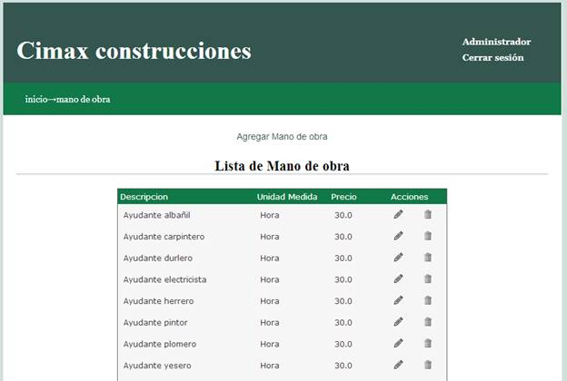
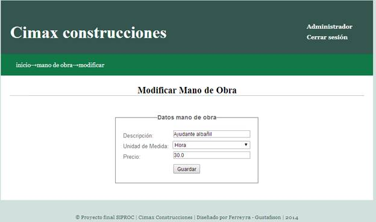
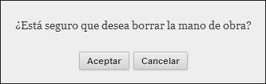
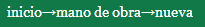

Mano de Obra
Al ingresar a la pantalla mano de obra, se le presentará la lista de mano de obra cargada en el sistema.

Para cada fila de la tabla, es decir, para cada material, las opciones disponibles de edición o borrado se encuentran en la columna acciones 
Edición mano de obra
Para realizar la edición, haga click en el icono del lápiz  al lado del material que desea editar.
al lado del material que desea editar.
Será conducido a una nueva pantalla donde se cargan automáticamente los datos del material seleccionado.

En esta pantalla usted puede ingresar una nueva descripción, seleccionar una nueva unidad de medida de las que estén disponibles en la lista, y/o ingresar un nuevo precio.
Al finalizar la edición, con el botón  podrá hacer efectivos los cambios.
podrá hacer efectivos los cambios.
En el caso que desee cancelar la edición, puede acceder a la página anterior haciendo click sobre “mano de obra” en la barra de navegación de la esquina superior izquierda
Borrar mano de obra
Para realizar el borrado, haga click en el icono del cesto  al lado del material que desea borrar.
al lado del material que desea borrar.
Se le mostrará una confirmación antes de realizar el borrado.


En caso que ya no quiera realizar el borrado, el botón cancelar lo llevara nuevamente a la lista de mano de obra sin haber borrado el material seleccionado.
En caso de aceptar, se borrará el material de la lista, y será redirigido a la página actualizada de la lista de mano de obra.
Agregar mano de obra
Para agregar una nueva mano de obra, haga click en el vinculo en la mitad superior de la pantalla “Agregar mano de obra”
Será conducido a una nueva pantalla donde se encuentran los campos disponibles para cargar los datos del nuevo material.
Descripción: ingrese la descripción del material.
Unidad de medida: seleccione de la lista la unidad de medida deseada.
Precio: el precio del material por unidad de medida.

Al finalizar la carga, con el botón  podrá hacer efectivos los cambios.
podrá hacer efectivos los cambios.
En el caso que desee cancelar el alta, puede acceder a la página anterior haciendo click sobre “mano de obra” en la barra de navegación de la esquina superior izquierda 